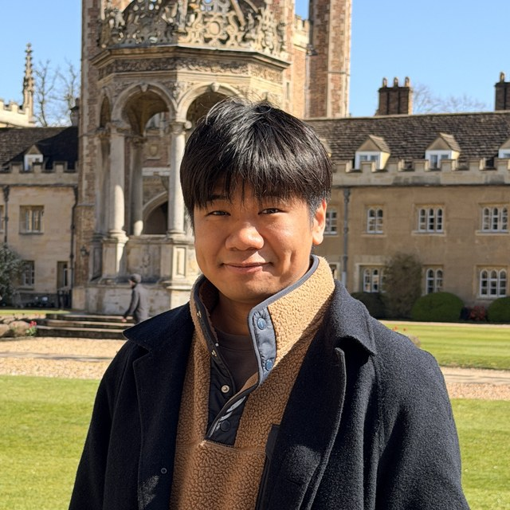
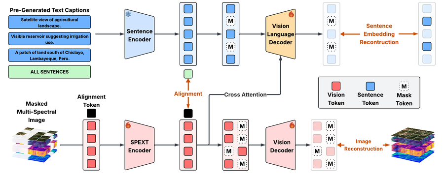
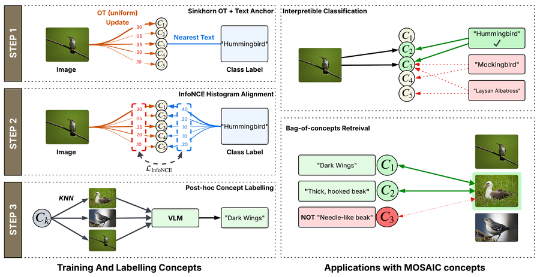
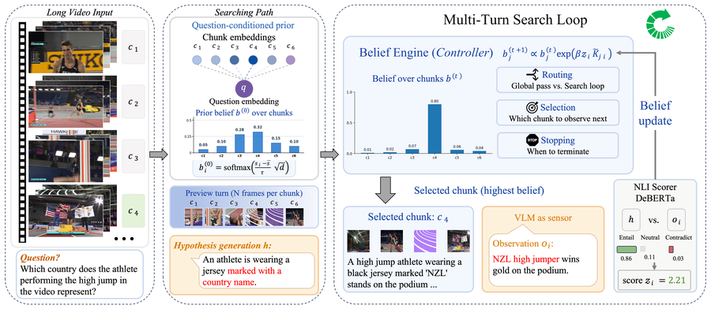
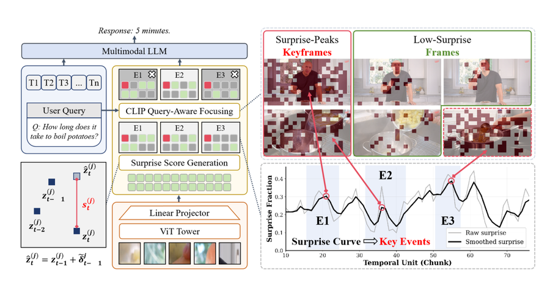
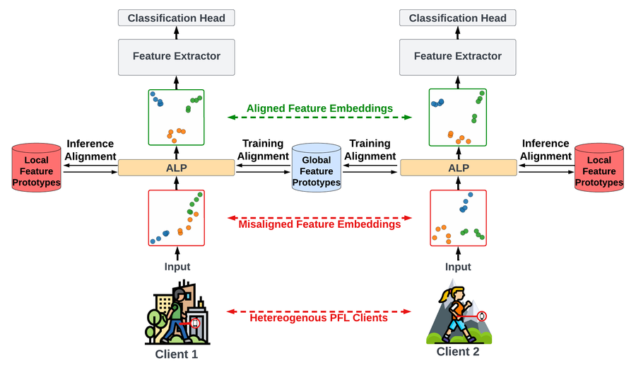
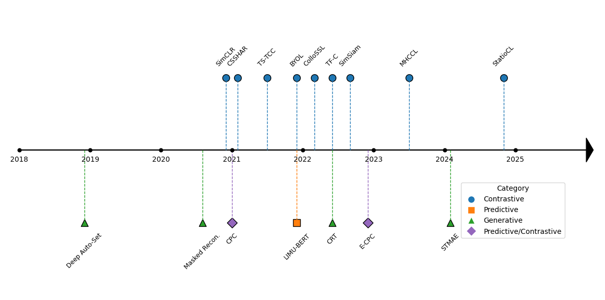
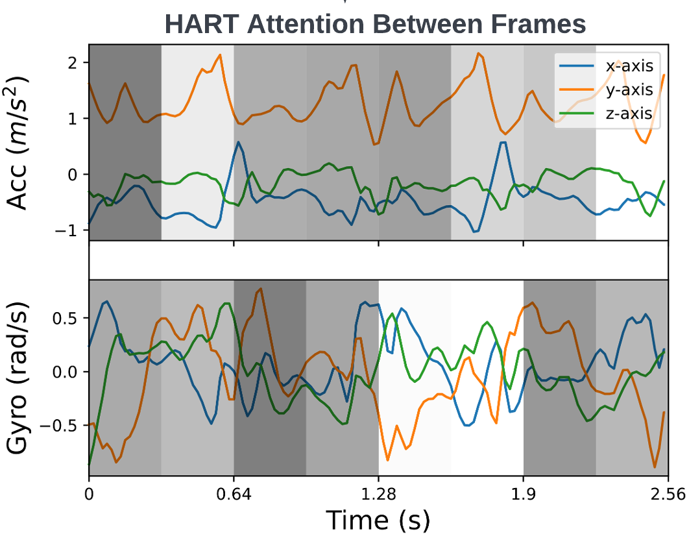
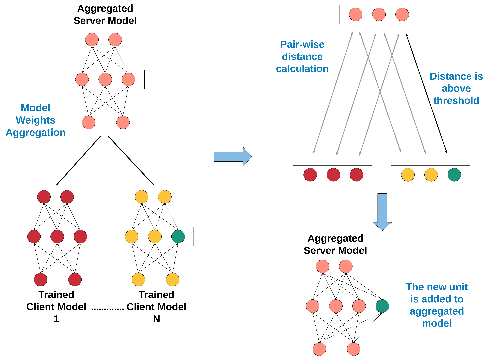

About
I am a Postdoctoral Research Associate at the University of Cambridge, Department of Computer Science and Technology, working with Prof. Robert Mullins, and affiliated with Trinity College. I work on efficient and robust multimodal AI: foundation models and vision-language models that are smaller, faster and easier to trust, with applications from satellite imagery to long videos.
I obtained my PhD from Université Grenoble Alpes, supervised by Prof. Philippe Lalanda and Prof. François Portet and sponsored by Naval Group. My thesis developed personalized federated learning for wearable sensing, robust to the differences between users and devices. I also hold a Master's degree in AI for Vision and Robotics from Université Grenoble Alpes.
News
- Sep 2026Three papers accepted at NeurIPS 2026: SPEXT, MOSAIC and The VLM as Sensor.
- Jan 2026SURGE accepted at ICLR 2026.
- 2025Best Paper Award from CCF Transactions on Pervasive Computing and Interaction.
- Jul 2025Joined the University of Cambridge, Department of Computer Science and Technology, as a Postdoctoral Research Associate.
- Nov 2024Defended my PhD thesis, Personalized Federated Learning for Sensor-based Human Activity Recognition in Pervasive Heterogeneous Environments.
- Aug 2024Research visit at the Internet and Mobile Computing Lab, Hong Kong Polytechnic University.
- Oct 2022Research visit at the EveryWare Lab, University of Milan.
- Nov 2021Research visit at Institut Jean Lamour, Université de Lorraine.
Publications
Full list on Google Scholar.
Recent work





Journals



Conference and workshop papers
- Combining Public Human Activity Recognition Datasets to Mitigate Labeled Data Scarcity. Riccardo Presotto, Sannara Ek, Gabriele Civitarese, François Portet, Philippe Lalanda, Claudio Bettini. IEEE SMARTCOMP 2023. paper | pdf
- Federated Learning Within Pervasive Heterogeneous Environments. Sannara Ek, François Portet, Philippe Lalanda. IEEE PerCom Workshops 2022. paper
- Federated Self-Supervised Learning in Heterogeneous Settings: Limits of a Baseline Approach on HAR. Sannara Ek, Romain Rombourg, François Portet, Philippe Lalanda. IEEE PerCom Workshops 2022. paper
- A Federated Learning Aggregation Algorithm for Pervasive Computing: Evaluation and Comparison. Sannara Ek, François Portet, Philippe Lalanda, German Vega. IEEE PerCom 2021. paper | code
- Evaluating Federated Learning for Human Activity Recognition. Sannara Ek, François Portet, Philippe Lalanda, German Vega. AI for Internet of Things Workshop, IJCAI-PRICAI 2020. pdf
- Evaluation of Federated Learning Aggregation Algorithms: Application to Human Activity Recognition. Sannara Ek, François Portet, Philippe Lalanda, German Vega. UbiComp/ISWC 2020 Adjunct. paper | pdf
Service
- Reviewer for NeurIPS, IEEE PerCom, ACM IMWUT, Pervasive and Mobile Computing, Knowledge-Based Systems, Frontiers in Digital Health and Frontiers in Public Health.
- Supervising Master's students on health LLMs and world models; previously supervised three Master's research interns.